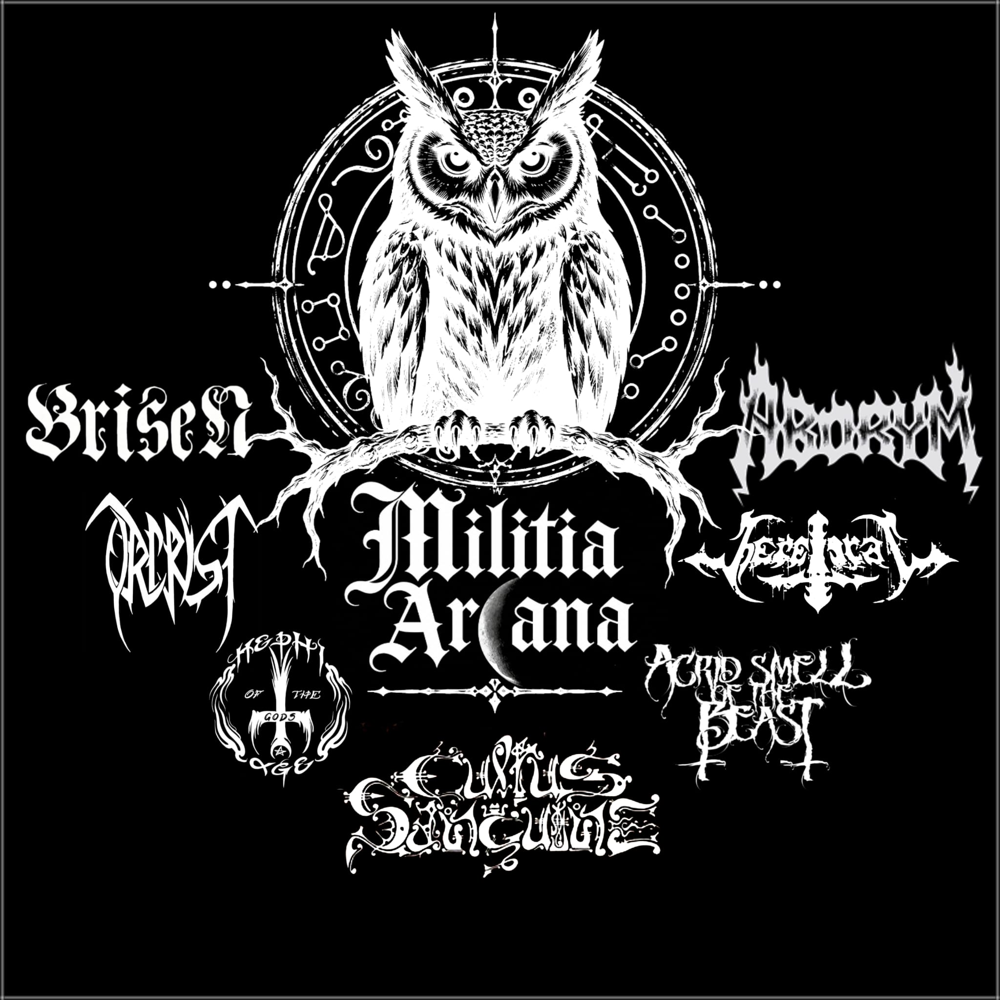

MILITIA ARCANA

6 Agosto 2026 — L'inizio di una nuova fratellanza
Da una idea di Elymas (Brisen) nasce Militia Arcana.
Non nasce semplicemente una nuova realtà musicale.
Nasce una fratellanza.
Una fratellanza formata da band metal italiane unite da un legame che va oltre la musica, oltre i palchi e oltre le singole esperienze personali. Un legame fondato sulla volontà di preservare e condividere un immaginario fatto di occulto, esoterismo, magia, folklore popolare, leggende, misteri e tradizioni del territorio italiano.
Militia Arcana nasce dall'idea che il Metal possa essere anche ricerca, memoria e identità. Le nostre terre sono ricche di racconti dimenticati, rituali antichi, simboli, superstizioni, tradizioni popolari e storie tramandate attraverso generazioni.
È da questo patrimonio che vogliamo attingere, trasformandolo in musica, parole, immagini e arte.
Non vogliamo creare una semplice associazione di band.
Vogliamo creare una comunità.
Un luogo ideale nel quale le band possano sostenersi reciprocamente, condividere esperienze, aiutarsi, promuovere la propria musica e mantenere vivo quello spirito di fratellanza che appartiene alla storia stessa della scena Metal.
Militia Arcana non chiede alle band di essere uguali.
Al contrario, la sua forza nasce dalle differenze.
Ogni gruppo porta con sé la propria storia, il proprio suono, la propria visione e il proprio territorio. Ciò che ci unisce non è la ricerca dell'uniformità, ma la consapevolezza di appartenere a qualcosa di più grande: una scena italiana capace di raccontare il proprio lato oscuro attraverso la creatività.
Militia Arcana è un patto di fratellanza.
Un patto basato sul rispetto, sulla collaborazione e sul sostegno reciproco.
Il 6 agosto 2026 rappresenta quindi una soglia.
Da una parte ciò che è stato: anni di musica, concerti, sacrifici, prove, demo, album, amicizie e battaglie.
Dall'altra ciò che deve ancora venire.
Una nuova pagina che sarà scritta insieme.
Non sappiamo ancora dove ci condurrà questa strada.
Ma sappiamo da dove parte.
Parte dall'Italia.
Parte dal Metal.
Parte dalle nostre storie.
Parte da tutto ciò che per troppo tempo è rimasto nell'ombra.
E da oggi quell'ombra ha un nome: MILITIA ARCANA.